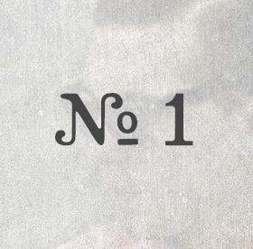
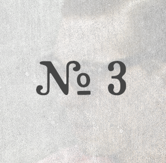

Session 1 dylan hodges & mark evitts

Session 2 tim gates

Drew and I have known the brothers from the Truman duo since our college days. Our paths have cris-crossed back and forth until earlier this year when we found ourselves all back in Nashville. This time we have families and spouses and “grown-up” jobs, but it was not any less fun to get together and jam some tunes. Ben and Chad Truman create a stellar sound. Their harmony has that brotherly perfection and they always find a killer groove. It was a blast to have their wives Katherine and Sami come to the house, eat dinner, laugh and catch up, and then finally get around to playing some music. Get more information on Truman here.
I think all of us writers would agree that this song was special from the beginning. I met up with Chad and Ben downtown and we settled on the idea quickly – but it took awhile to mold it into something you could sing. It was fun sitting around talking about all the reasons life is good right now. Everyone can relate to falling into the trap of “wishing and waiting” for things to be better. But life is more beautiful when you “live it in the middle!”
We also asked Ben and Chad to pick a song from their set that we could jam on together. We added mandolin and fiddle to I Want You There and it turned out great. See what I mean about that brotherly harmony? I swear I could listen to that stuff all day long.
Brought to you by Drew & LaceyWant to be a part of the After Bedtime Sessions? Send us an email